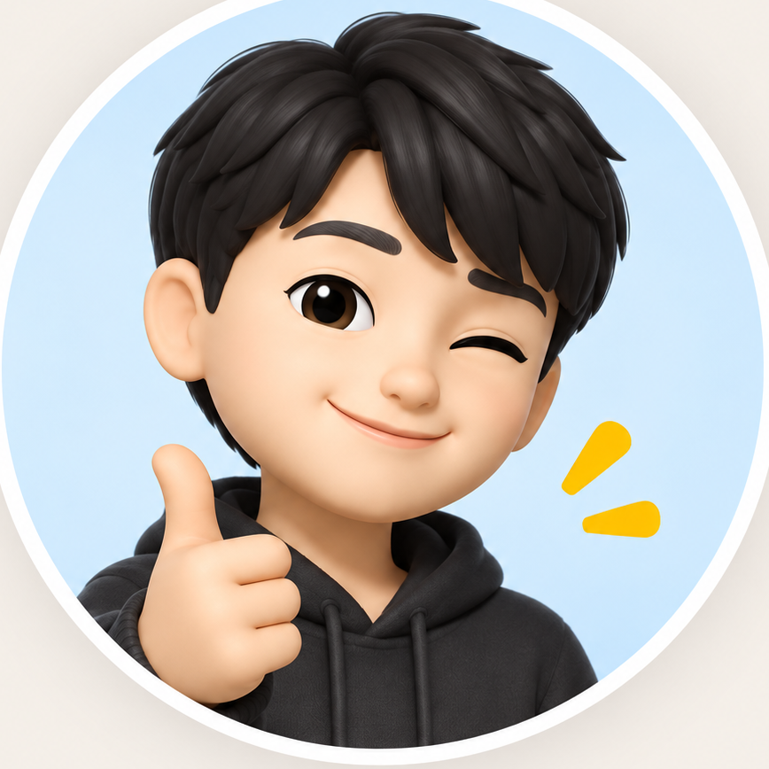
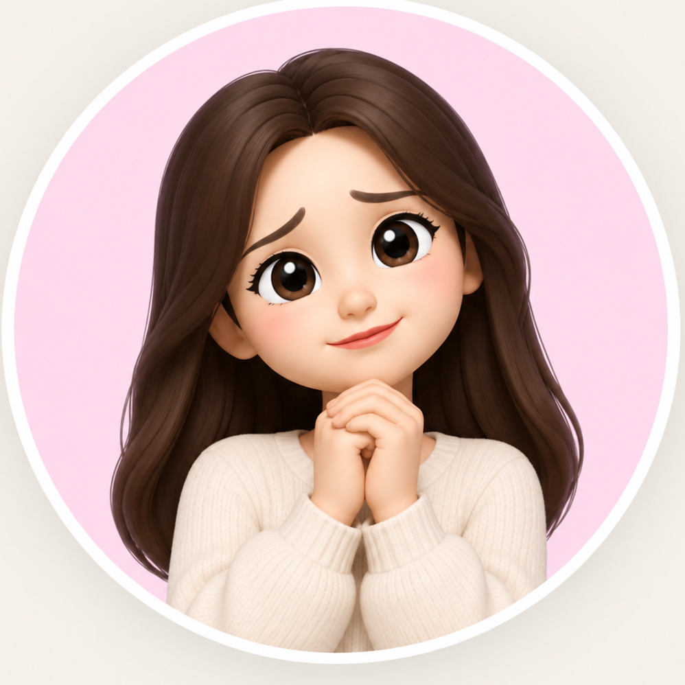
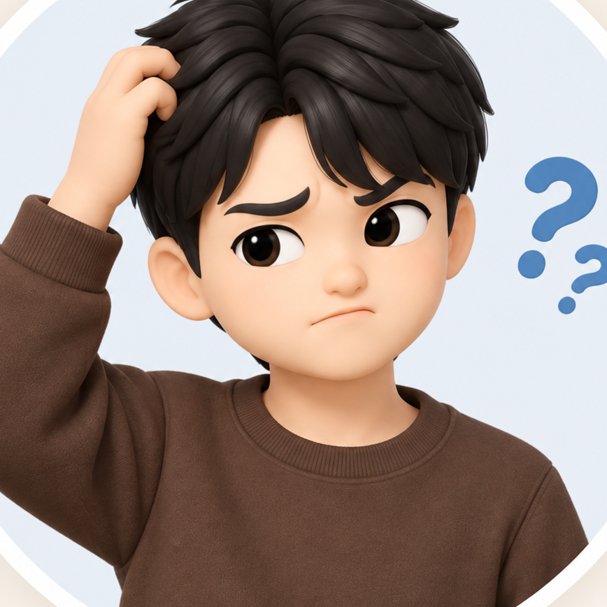
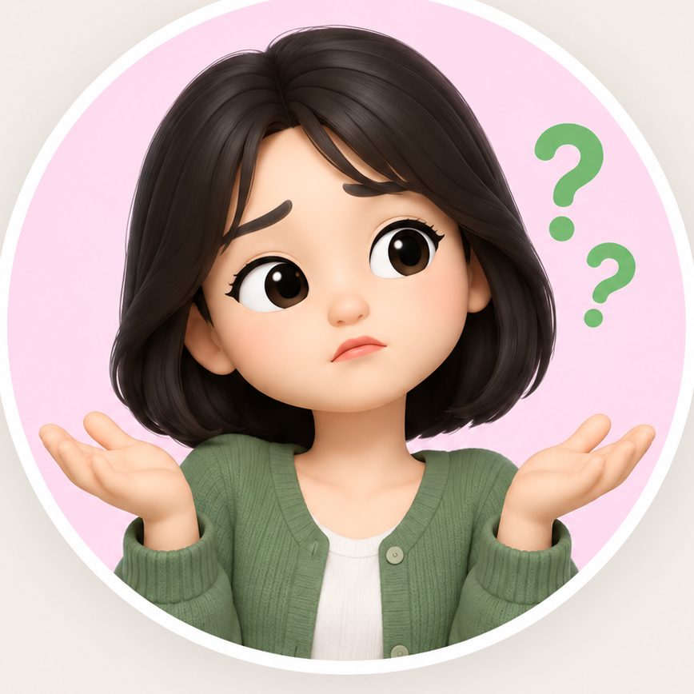
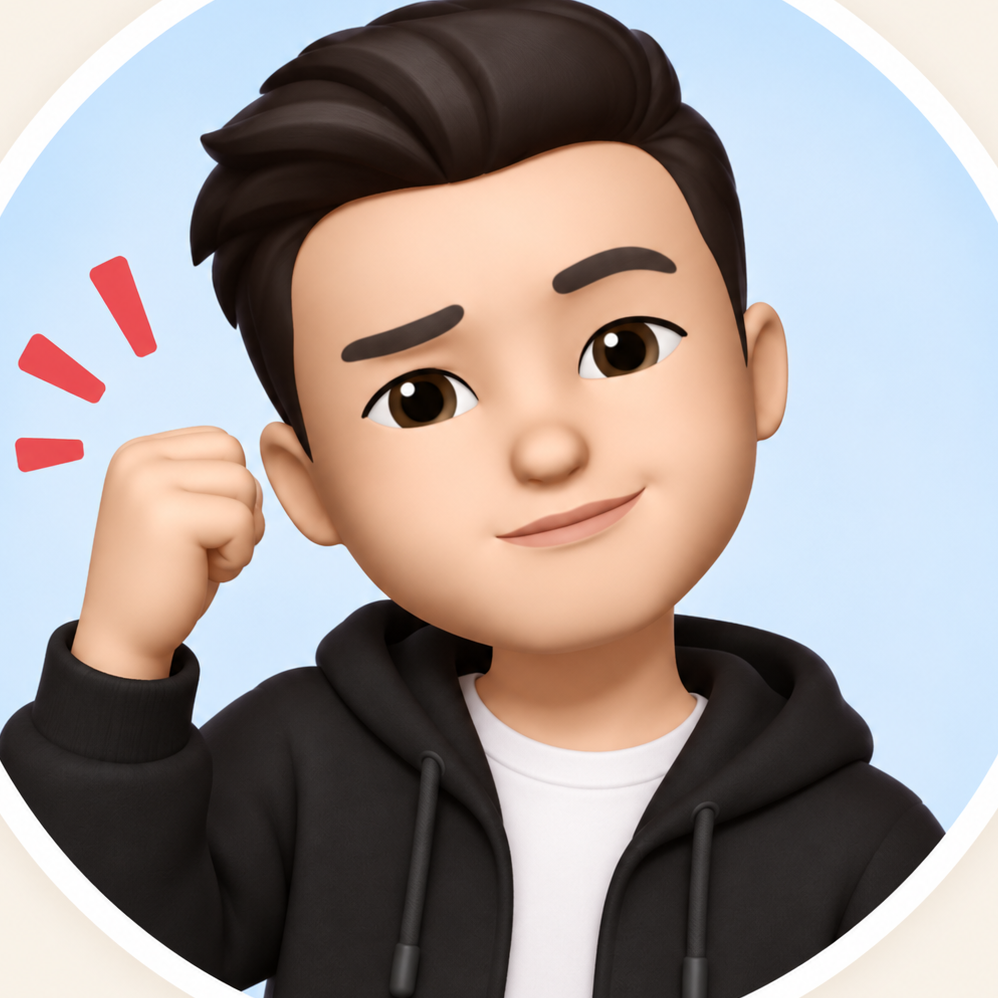

그래서 고민을 조금이라도 덜어드리고자
가능성 진단을 만들어서 무료로 배포했습니다.
구글폼이라 모양새는 고급스럽지 않지만,
40개가 넘는 질문이 유기적으로 계산되면서
제가 설계한 알고리즘대로 진단이 나오게 만들었어요.
그런데 그 뒤로 이런 질문들이 계속 있어 왔습니다.

어떻게 해야 재회확률을 높일 수 있을까요?
구체적인 방법도 알고 싶어요
그동안 이런 부분은
주로 정식 상담을 통해 도와드렸습니다.
관계를 전체적으로 분석하고,
지금 해야 할 행동부터 이후의 재회플랜 설계까지요.
이를 같이 설계하는 것이 가장 제대로 도움을 드릴 수 있는 방법이라고 생각했기 때문입니다.
하지만 상담을 고민하시는 분들 중에는
이런 분들도 있었습니다.
이런 분들도 있었습니다.
당장 상담은 부담스러운데, 상대방 마음만이라도 알 수 없을까요?
재회시도를 해볼만한 관계인지, 그거 하나만 봐주실 수 없을까요?
사실 처음엔 망설였습니다.
상대의 마음만 분석하거나
재회를 시도할 만한지에 대한 판단만 드리는 것이
과연 충분한 도움이 될까 싶었기 때문입니다.
그래서 꽤 오랫동안 따로 만들지 않았습니다.
허나 최근 들어 비슷한 요청이 계속 들어왔습니다.

지금 당장 정식 상담까지는 부담스럽지만,
그래도 내 상황만큼은 조금 더 제대로 알고 싶어요.
그래도 내 상황만큼은 조금 더 제대로 알고 싶어요.
그런데 곰곰이 생각해보니 순서가 있더군요.
방법을 몰라서 못 하는 게 아니라,
아래 2가지 판단이 안 서서
못 움직이는 분들이 많았던 겁니다.

‘그 사람의 마음이 어떨지?’
‘재회를 시도해볼만한 가치가 있을지?’
그래서 지금 가장 궁금한 질문 하나에만 집중해서
제대로 분석받을 수 있는 선택지도
충분한 도움이 될 수 있다는 생각이 들게 됐습니다.
